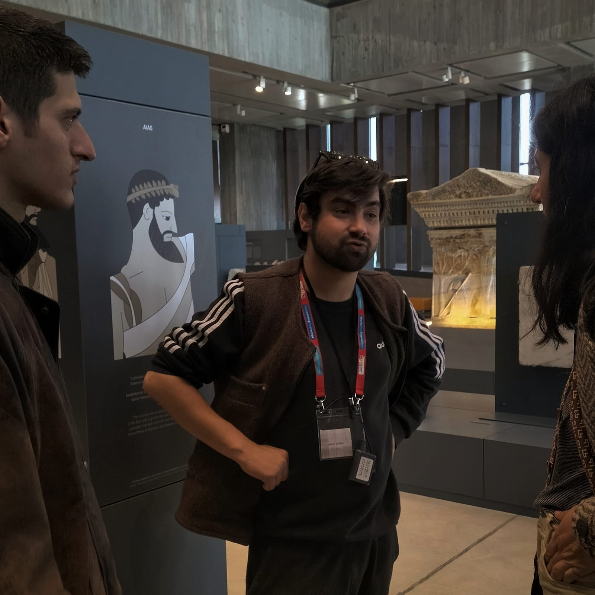
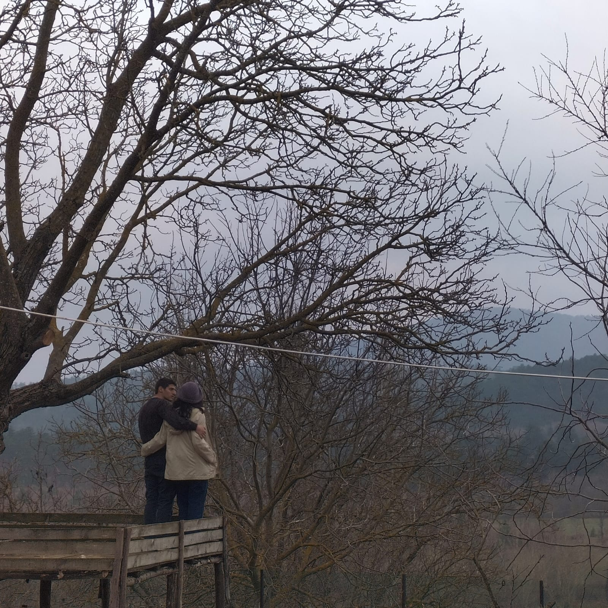
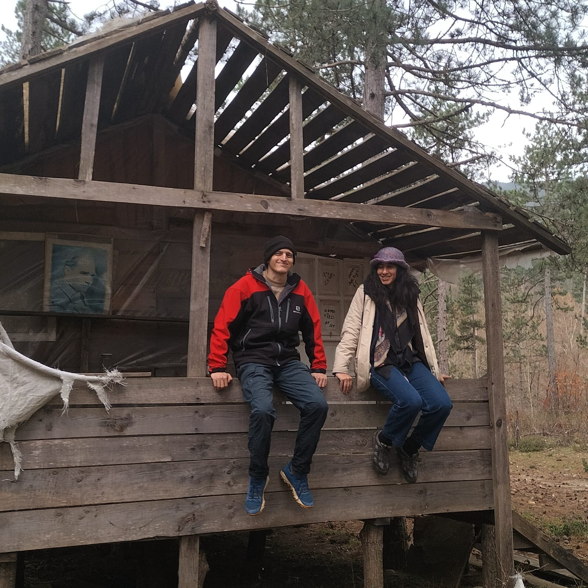
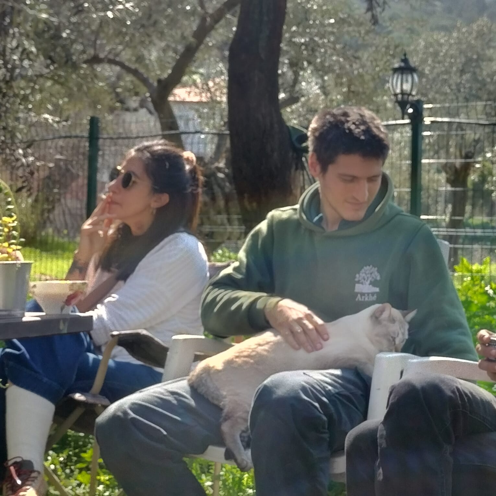
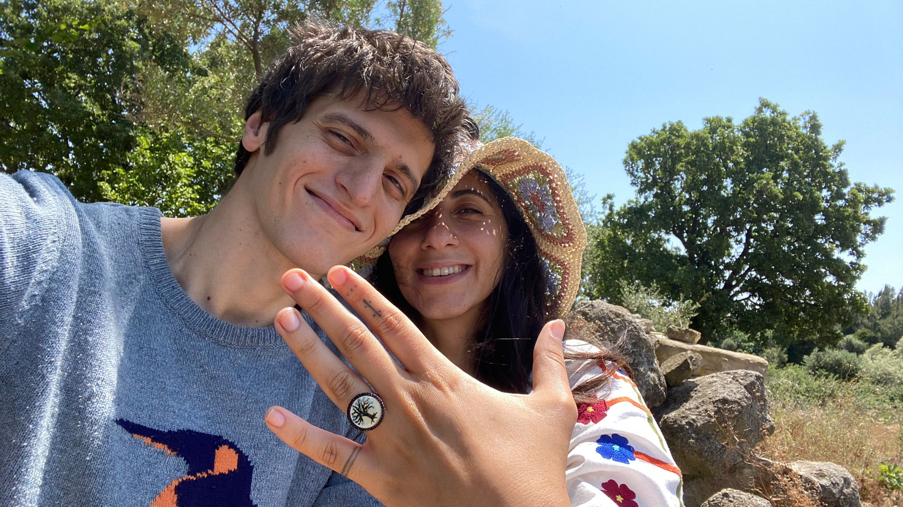
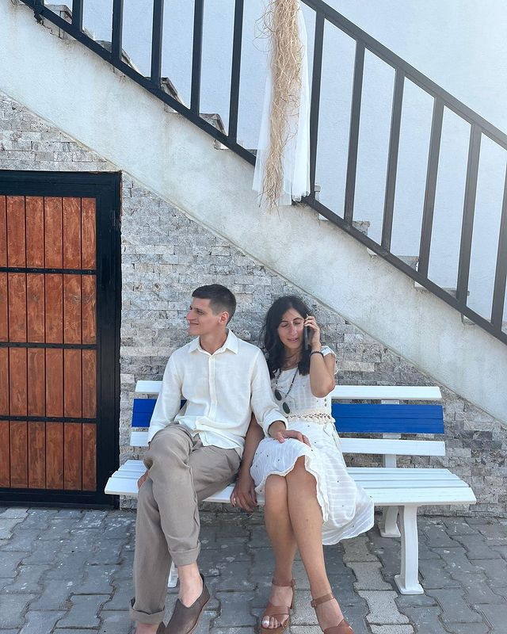
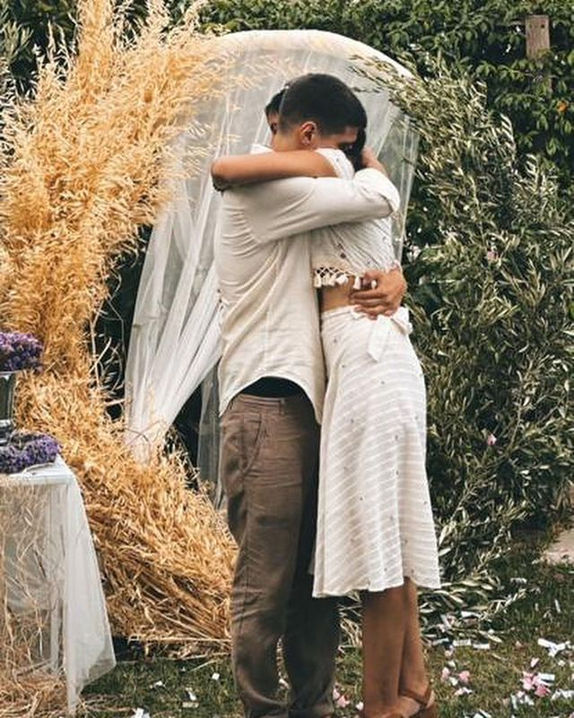

28 Şubat, Çanakkale, Şakir'in Yeri
28 Şubat, Çanakkale, Şakir'in Yeri
20. Gün

1 Mart, Çanakkale, Troya Müzesi
21. Gün

3 Mart, Çanakkale, Akköy
23. Gün

4 Mart, Çanakkale, Akköy
24. Gün
8 Mart, Çanakkale, Merkez
28. Gün

25 Mart, Yusuflu Köyü
45. Gün
 26 Mart, APJ
26 Mart, APJ
46. Gün
 30 Mart, Bodrum
30 Mart, Bodrum
50. Gün
3 Nisan, Bodrum
54. Gün

7 Haziran, Şirince
118. Gün

5 Temmuz, Alçıtepe
146. Gün

5 Temmuz, Alçıtepe
146. Gün
23 Eylül, Alçıtepe
227. Gün